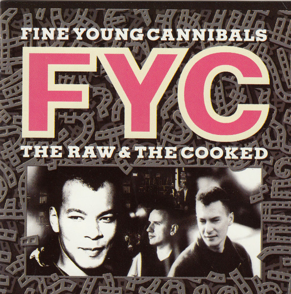

CD
The Raw & The Cooked
Fine Young Cannibals
Media: — · Sleeve: —
—
Personal
Discogs SuggestedCA$1.60
Discogs MedianCA$1.60
Discogs HighCA$1.60
- Physical Copy ID
- BB-CD-1246
- Year
- 1989
- Label
- I.R.S. Records, MCA Records
- Catalog #
- IRSXD-6273, IRSXD-6273
- Country
- CACanada
- Genre / Style
- Electronic, Rock · Pop Rock, Synth-pop